[更新履歴]
- 2025/01/29 : ブログ公開
- 2025/10/21 : アラートの重複と検知漏れに関する情報を追記
こんにちは、Azure Monitoring サポート チームの北村です。
今回は Azure Monitor のアラートに関するよくあるご質問をご紹介します。
リソース正常性アラートやサービス正常性アラートについては、別途ブログを投稿しておりますので併せてご覧いただけますと幸いです！
<メトリック アラート ルール>
- Q. メトリック アラート ルールの設定項目を教えてください。
- Q. メトリック アラート ルールの設定にて [確認する間隔] と [ルックバック期間] はどのように選ぶのが良いですか？
- Q. 静的しきい値のメトリック アラート ルールで、2 回連続でしきい値を満たした時にアラートを発報させることはできますか。
- Q. メトリック アラート ルールが実行されるタイミングを指定することはできますか。
- Q. メトリック アラート ルールで時間帯によって条件を変更することはできますか。
- Q. ステートフルなメトリック アラート ルールで起動済み (Fired) のアラートを、手動で解決済み (Resolved) に変更することはできますか。
- Q. メトリック アラート ルールのディメンション値のドロップ ダウンに値が表示されません。
- Q. メトリック アラート ルール編集画面の [プレビュー] ではしきい値を満たしていたように見えますが、アラートが発報していません。
- Q. メトリック アラート ルールの利用料金を教えてください。
<ログ アラート ルール>
- Q. ログ アラート ルールの設定項目を教えてください。
- Q. ログ アラート ルールの設定にて [評価の頻度] と [集計の粒度] はどのように選ぶのが良いですか？
- Q. ログ アラート ルールが実行されるタイミングを指定することはできますか。
- Q ログ アラート ルールのディメンション値のドロップダウンに値が表示されません。
- Q. ログ アラート ルールでディメンションを設定し、各ディメンションのログが 0 件のときに発報するルールを作成しました。特定のディメンションを含むログの出力を停止しましたが、アラートが発報しません。
- Q. ログ アラート ルールの設定画面を開いたところ、アラート ルールによって UI が異なります。
- Q. 旧 API (バージョン 2018-04-16 以前) のログ アラート ルールを作成する方法を教えてください。
- Q. ログ アラート ルールで通知されるメールの件名や本文をカスタマイズすることはできますか。
- Q. ログ アラート ルールで通知されたメールの件名やフォーマットが変わりました。原因を教えてください。
- Q. ログ アラート ルールが勝手に無効化されていました。考えられる原因を教えてください。
- Q. ログ アラート ルールの利用料金を教えてください。
<アクティビティ ログ アラート（サービス正常性アラート、リソース正常性アラート、アクティビティ ログ アラート）>
- Q. サービス正常性アラートでテスト発報することは可能ですか。
- Q. サービス正常性アラートで通知された内容について確認したいです。
- Q. サービス正常性アラートで通知されたメールを、メールの件名でフォルダ分けしたいです。件名のルールを教えてください。
- Q. サービス正常性アラートで、現在利用しているサービスに関する通知のみを受け取りたいです。
- Q. Azure サービスの廃止に関する通知を受け取り、通知の内容に沿って移行作業を実施しましたが、同様の通知が再度通知されました。対応が完了していないリソースが存在するということでしょうか。
- Q. サービス正常性アラートやリソース正常性アラートを利用し、アクション グループでメール通知を設定しています。利用料金を教えてください。
<アクション グループ、アラート処理ルール>
- Q. アクション グループの処理が失敗したことを検知する方法はありますか。
- Q. アラートが発報しましたが、メールが届いていません。考えられる原因を教えてください。
- Q. アクション グループでメールを通知しています。利用料金を教えてください。
- Q. アラート処理ルールのスコープでは、通知を抑制したいアラート ルールを指定すればよいのでしょうか。
- Q. アラート処理ルールを利用していますが、Azure ポータルの [監視] > [アラート] でアラートが発報しているようです。
- Q. アラート処理ルールによってアラート ルールの通知が抑制されたことを確認する方法を教えてください。
- Q. アラート処理ルールのスコープは「サブスクリプション」や「リソース グループ」の単位で登録した方がよいですか
- Q. ステートフルなアラート ルールを設定しています。アラートが「解決」したときのみ通知を抑制することはできますか。
- Q. アラート処理ルールでサービス正常性アラートの通知を抑制することはできますか。
メトリック アラート ルール
Q. メトリック アラート ルールの設定項目を教えてください。
メトリック アラート ルールの設定項目は、公開情報をご確認いただけますと幸いです。
また、動的しきい値を利用したメトリック アラートについては こちらの公開情報もご参照ください。
アラート ロジック
メトリックの値を集計する方法、集計された値と比較する際のしきい値等を指定します。※ 静的しきい値を選択したときの設定項目です。
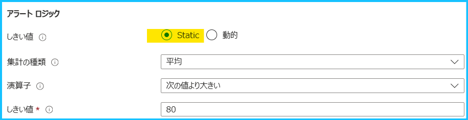
※ 動的しきい値を選択したときの設定項目です。
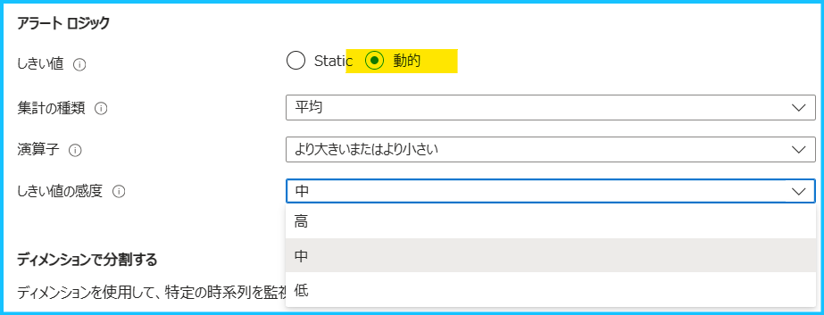
| しきい値 | 静的しきい値では指定した値に基づいて評価されます。 動的しきい値では機械学習アルゴリズムを使用してメトリックの動作パターンが継続的に学習され、予期しない動作に該当するしきい値が計算されます。 |
| 集計の種類 | [ルックバック期間] で設定した期間において、データをまとめる方法を選択します。 |
| 演算子 | 集計された値と比較する際に、どの様な比較を行うかを設定します。 |
| しきい値 (静的しきい値) | 集計された値と比較する際に使用するしきい値を数値で設定します。 |
| しきい値の感度 (動的しきい値) | アラートをトリガーする感度のレベルを指定します。 |
ディメンション
ディメンションは、メトリック値に関する追加のデータ (名前と値のペア) です。 メトリックは、個々のリソースごとに記録されますが、ディメンションはメトリックの値をより詳細に説明するための追加情報とお考えください。 ディメンションを分割しない場合、メトリックのデータをより細かく分析するための要素を考慮せずに集計されます。 一方で、ディメンションを分割した場合には、そのディメンションで集計されたデータが監視され、メトリックのデータをより細かく分析することができます。 また、複数のディメンション値を選択した場合は、その組み合わせによって集計されたデータごとに監視されます。 詳細はこちらの公開情報ごご覧いただけますと幸いです。 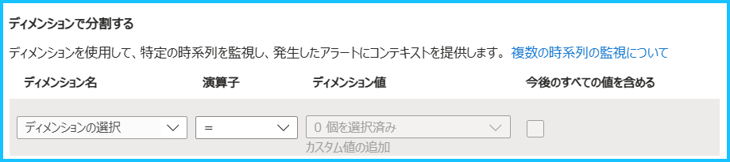| ディメンション名 | メトリックの特定列によって分割したい場合に利用します。 |
評価するタイミング
1 回の評価を行う際に評価の対象となる期間と、評価の頻度を設定します。※ 静的しきい値を選択したときの設定項目です。
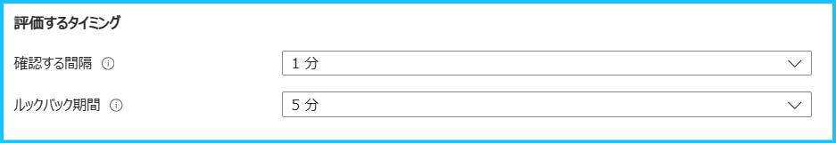
※ 動的しきい値を選択したときの設定項目です。
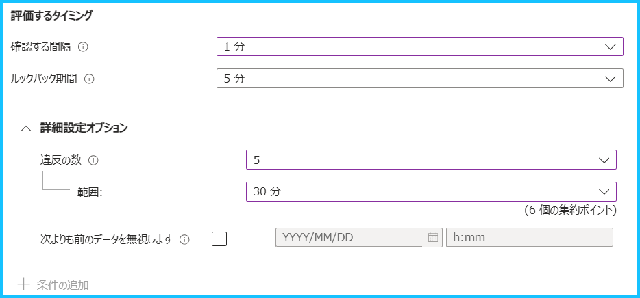
| 確認する間隔 | 集計された値としきい値の比較を行う頻度です。[確認する間隔] は [ルックバック期間] で設定した期間以下とする必要があります。 |
| ルックバック期間 | 1 回の評価を行う際に評価の対象となる期間を設定します。 |
| 違反の数 (動的しきい値) | アラートをトリガーするために発生する必要がある違反の数を設定します。 |
| 範囲 (動的しきい値) | 違反の数を評価する期間です。[範囲] で指定した期間を、[ルックバック期間] で分割され、しきい値を違反していた数を確認します。 |
Q. メトリック アラート ルールの設定にて [確認する間隔] と [ルックバック期間] はどのように選ぶのが良いですか？
[確認する間隔] と [ルックバック期間] を設定する際の注意点について説明します。
“確認する間隔 == ルックバック期間” の設定の場合、メトリックが評価可能になるまでの遅延による影響を受ける可能性が高くなります。
アラート ルールを設定する際には、監視の目的に応じて以下のように設定することをご検討ください。
【漏れを防ぎたい (重複して検知を容認する) 】確認する間隔 < ルックバック期間
【重複検知を防ぎたい (検知漏れを容認する) 】 確認する間隔 == ルックバック期間
Q. 静的しきい値のメトリック アラート ルールで、2 回連続でしきい値を満たした時にアラートを発報させることはできますか。
メトリック アラートでは「特定の条件を満たした状態が N 回継続したときに通知する」という設定ではできません。
一方で、監視対象のメトリックがプラットフォーム メトリックであり、Azure Monitor の診断設定でメトリックを Log Analytics ワークスペースに転送できる場合には、ログ アラート ルールにてご要件を満たす設定が実現できる可能性があります。
ログ アラート ルールの場合は [違反の数] を利用することで、特定の条件を満たした状態が N 回継続したときに通知することが可能です。大まかな設定手順は以下の通りです。
- Azure Monitor の診断設定の機能で Log Analytics ワークスペースにメトリックをエクスポートする
- 対象の Log Analytics ワークスペースをスコープにして、ログ アラート ルールを作成する
メトリックを Log Analytics ワークスペースにエクスポートすると、Log Analytics ワークスペース上では AzureMetrics というテーブルに格納されます。例えば、Azure VM の Percentage CPU の平均値を監視している場合、以下のようなクエリでメトリックの平均値を確認することができます。
1 | AzureMetrics |
ログ アラート ルールの場合は、これらの値を利用してログ アラート ルールを設定します。
例えば、[評価の頻度] が 5 分、[集計の粒度] が 5 分、[違反の数] を 3、[評価期間] が 15 分と設定したとします。
この場合、[評価の頻度] の 5 分毎に、15 分の [評価期間] が 5 分の [集計の粒度] で分割されます (15 ÷ 5 = 3)。この 3 つのグループの中で閾値を違反するグループが 3 つあった場合にアラートが発報します。ログ アラート ルールの設定項目は、本ブログの「ログ アラート ルールの設定項目を教えてください」もご覧ください。
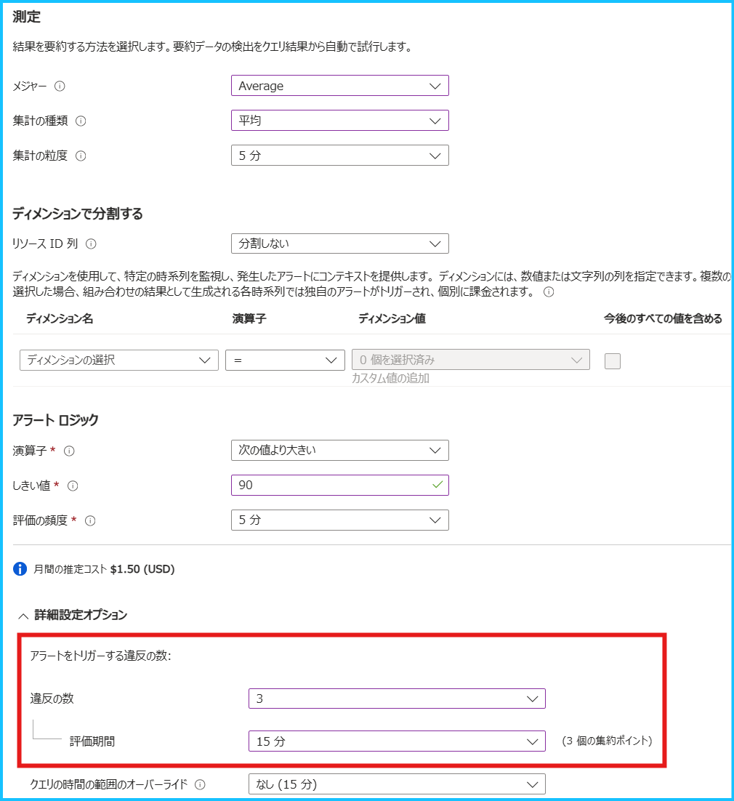
Q. メトリック アラート ルールが実行されるタイミングを指定することはできますか。
Azure Monitor のアラート ルールでは、アラートが実行されるタイミングを指定することはできません。
アラート ルールが作成された時点から指定された "確認する間隔" のタイミングでアラート ルールが実行されるとご認識ください。
Q. メトリック アラート ルールで時間帯によって条件を変更することはできますか。
メトリック アラート ルールで時間帯によって条件を変更することはできません。
時間帯によって条件を変更したい場合には、以下の方法をご検討ください。
- 複数のメトリック アラート ルールを作成し、アラート処理ルールを使用して特定の時間帯の通知を抑制する
- 監視対象のメトリックをログとして Log Analytics ワークスペースに収集できる場合には、ログ アラート ルールで監視する
Q. ステートフルなメトリック アラート ルールで起動済み (Fired) のアラートを、手動で解決済み (Resolved) に変更することはできますか。
いいえ、手動で解決済みに変更することはできません。
メトリックの値がしきい値を満たさなくなるように Azure リソースを操作してください。
Q. メトリック アラート ルールのディメンション値のドロップ ダウンに値が表示されません。
ディメンションは過去 48 時間のデータをもとに表示されます。
過去 48 時間以内に当該ディメンション値を含むメトリックが記録されていない場合は、ディメンション値のドロップダウンには表示されません。ディメンション値が表示されない場合はカスタム値として設定いただきますようお願いいたします。
Q. メトリック アラート ルール編集画面の [プレビュー] ではしきい値を満たしていたように見えますが、アラートが発報していません。
下図はプレビュー画面であり、実際のアラート ルールの評価時刻やルックバック期間に基づいた集計の粒度で表示されていない場合がございます。このため、実際にはしきい値を満たしていない場合でも、プレビュー画面上ではしきい値を満たしているように表示されてしまう場合もございます。
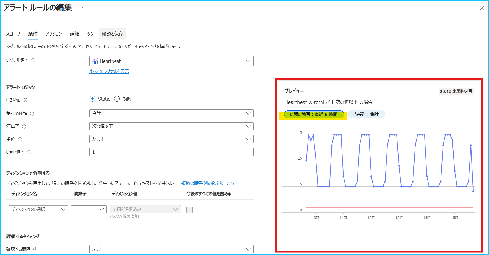
こちらの公開情報の手順に沿って、しきい値を満たしていたと推測される時間帯のメトリック値をご確認ください。
メトリック エクスプローラー上でもアラートのしきい値を満たしている場合には、何らかの原因によりアラートが想定通り発報しなかった可能性がございます。アラートの検知漏れの調査をご要望の場合には、以下の情報をご記載の上、お問い合わせをご起票ください。
・アラート ルールのリソース ID
・アラートが発報されることが想定された日時 (タイムゾーンを明記してご記載ください。例. 2024-12-30 12:00 JST)
Q. メトリック アラート ルールの利用料金を教えてください。
メトリック アラート ルールは、監視対象の時系列ごとに課金されます。時系列はメトリックではなく、監視する単位とお考え下さい。例えば、静的メトリック アラート ルールで 10 個の VM を対象に 4 つのメトリックを監視した場合の月額料金は以下のとおりです。
(10 VM * 4 メトリック時系列/VM - 10 無料ユニット分) * メトリック時系列あたりの価格/月
また、アラート ルールにご指定いただくメトリック数 (条件数) 以外に、ディメンション分割した場合もメトリックの時系列が増加します。例えば、静的メトリック アラート ルールで 10 個の VM を対象に 4 つのメトリックを監視し、このうち 1 つのメトリックで 1 つのディメンションを選択してディメンションの値を 2 つ指定した場合、月額料金は以下のように計算されます。
(10 VM * 3 メトリック時系列/VM + 10 VM * 1 メトリック時系列/VM * 1 ディメンション * 2 個 - 10 無料ユニット分) * メトリック時系列あたりの価格/月
価格の詳細は Azure Monitor 価格サイトや計算ツールをご覧ください。
なお、アクション グループによってメールや SMS 等でアラートを通知している場合には、別途アクション グループに関するご利用料金も発生しますのでご留意ください。
ログ アラート ルール
Q. ログ アラート ルールの設定項目を教えてください。
ログ アラート ルールの設定項目は、公開情報をご確認いただけますと幸いです。
測定
ログ検索を行う検索期間、実行結果の集計方法を指定します。 例えば、[集計の粒度] を 10 分、[集計の種類] を [平均] とした場合、10 分間の期間にあるデータを平均化し、その値をアラート検知に利用します。 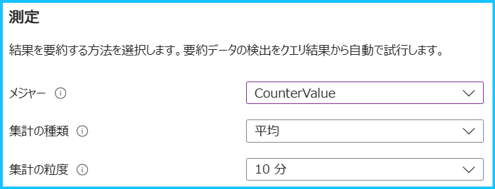| メジャー | 集計対象のテーブルの行または数値列を選択します。 |
| 集計の種類 | [集計の粒度] で設定した期間において、データをまとめる方法を選択します。 |
| 集計の粒度 | クエリで取得したログを一つのグループにまとめる単位を示します。 |
ディメンション
ディメンションごとに分割すると、数値列または文字列の組み合わせがグループ化され、複数の Azure リソースで同じ条件を監視できます。複数のディメンション値を選択した場合は、その組み合わせによって生成される時系列ごとに独自のアラートがトリガーされ、個別に処理されます。 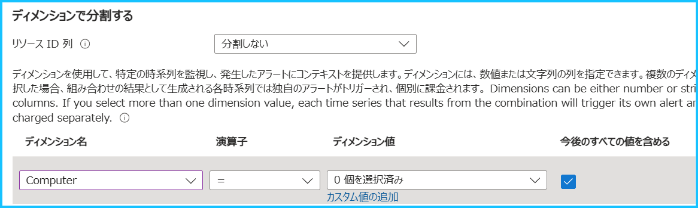| リソース ID 列 | クエリ結果に リソース ID が含まれていると、自動的に検出され、選択状態となります。リソース ID を指定した場合、リソース ID 毎にアラートのターゲットとして分割され、リソース ID 別にアラートの検知、通知が行われます。 |
| ディメンション名 | リソース ID 以外の特定列によって分割したい場合に利用します。 |
アラートロジック
[測定] の設定によって集計された値と比較する際のしきい値と、評価の頻度を設定します。 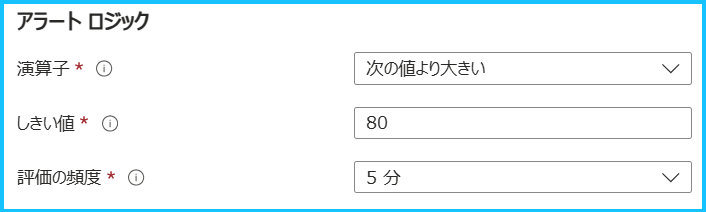| 演算子 | [測定] の設定によって集計された値と比較する際に、どの様な比較を行うかを設定します。 |
| しきい値 | [測定] の設定によって集計された値と比較する際に、使用するしきい値を数値で設定します。 |
| 評価の頻度 | [測定] の設定によって集計された値としきい値の比較を行う頻度です。[評価の頻度] は [集計の粒度] で設定した期間以下とする必要があります。 |
Q. ログ アラート ルールの設定にて [評価の頻度] と [集計の粒度] はどのように選ぶのが良いですか？
[評価の頻度] と [集計の粒度] を設定する際の注意点について説明します。
Log Analytics ワークスペースに収集されるデータは、収集遅延や待機時間が発生いたします。
このログ取り込みにかかる平均待機時間は一般的には 20 秒から 3 分ですが、システムの負荷状況などによりさらに遅延が発生する可能性があります。
“評価の頻度 == 集計の粒度” の設定ですと、ログの取り込みにかかる時間や収集遅延による影響を受ける可能性がより高くなります。
アラート ルールを設定する際には、監視の目的に応じて以下のように設定することをご検討ください。
【漏れを防ぎたい (重複して検知を容認する) 】 評価の頻度 < 集計の粒度
【重複検知を防ぎたい (検知漏れを容認する) 】 評価の頻度 == 集計の粒度
Q. ログ アラート ルールが実行されるタイミングを指定することはできますか。
Azure Monitor のアラート ルールでは、アラートが実行されるタイミングを指定することはできません。
アラート ルールが作成された時点から指定された "評価の頻度" のタイミングでアラート ルールが実行されるとご認識ください。
Q. ログ アラート ルールのディメンション値のドロップ ダウンに値が表示されません。
メトリック アラート ルールと同様、ディメンションは過去 48 時間のデータをもとに表示されます。
過去 48 時間以内に当該ディメンション値を含むログが記録されていない場合は、ディメンション値のドロップダウンには表示されません。ディメンション値が表示されない場合はカスタム値として設定いただきますようお願いいたします。
Q. ログ アラート ルールでディメンションを設定し、各ディメンションのログが 0 件のときに発報するルールを作成しました。特定のディメンションを含むログの出力を停止しましたが、アラートが発報しません。
ログ アラート ルールでディメンションを分割した場合、すべてのディメンションのログが 0 件のときにはアラートが検知されますが、一部のディメンションが 0 件のときには、アラートが検知されません。例を用いて説明します。
例えば、Windows マシンでパフォーマンス カウンターを収集し、「\Process(*)\ID Process」を監視するアラートを構成していたとします。
ログ アラート ルールに対して下記のようなクエリを指定し、Computer と InstanceName でディメンション分割されたと仮定します。
1 | Perf |
このアラート ルールで [集計の粒度] を 5 分とした場合、下記のように直近 5 分間のログを検索し Computer、InstanceName 列でレコード数を集計したデータを、ログ アラート ルールは確認します。つまり、Log Analytics ワークスペースに存在するログに対してディメンション分割されます。
1 | Perf |
上記のクエリで特定のプロセスを停止し、5 分以上当該プロセス情報が送信されていなかったとしても、そもそも直近 5 分間のログとして監視対象のプロセスに該当するログが存在しないため、そのプロセスに対するディメンション分割ができず、アラート ルールは検知できません。
一方で、下記のようにログ アラート ルールを設定いただくことで、このような問題を回避することができます。
このクエリでは、過去 2 日間のデータをプロセス リストとして取得し、直近 5 分間のデータとジョインしてレコードの数をカウントします。
1 | let Computer_InstanceList = |
< 測定 >
メジャー : AggregatedValue
集計の種類 : 合計
集計の粒度 : 2 日
< ディメンションで分割する >
リソース ID 列 : 分割しない
ディメンション設定 : ComputerName と InstanceName を指定
< アラート ロジック >
演算子 : 次の値以下
しきい値 : 0
評価の頻度 : 5 分
Q. ログ アラート ルールの設定画面を開いたところ、アラート ルールによって UI が異なります。
ログ アラート ルールの API バージョンによって UI が異なります。
API のバージョンが 2021-08-01 以降の場合は新 UI、バージョン 2018-04-16 以前であれば旧 UI で表示されます。
旧 UI のアラート条件を設定する画面です。
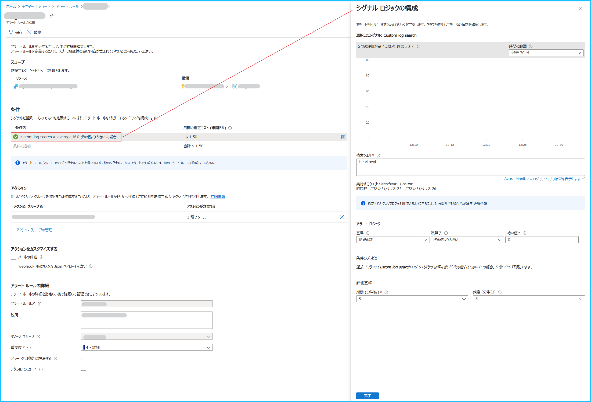
新 UI のアラート条件を設定する画面です。
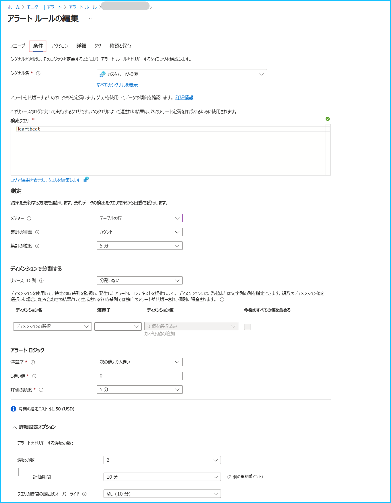
ログ アラート ルールの API バージョンは、Azure Resource Graph クエリで確認することができます。Azure ポータルで [Resource Graph エクスプローラー] (Azure Resource Graph エクスプローラー) を開き、API バージョンをご確認ください。また、API バージョンの違いによる UI の差異については、こちらのブログでも紹介しておりますので、ぜひご覧下さい。
1 | resources |
Q. 旧 API (バージョン 2018-04-16 以前) のログ アラート ルールを作成する方法を教えてください。
旧 API バージョンのログ アラート ルールを作成する場合は ARM テンプレートや REST API を利用してアラート ルールをデプロイしてください。Azure ポータルからログ アラート ルールを作成した場合は、現行の API (バージョン 2021-08-01 以降) でデプロイされます。弊社サイトの 「(バージョン 2018-04-16 以前) 」 と記載されたテンプレートは旧 API バージョンの ARM テンプレートになります。また、REST API の場合はこちらのサイトをご覧ください。
Q. ログ アラート ルールで通知されるメールの件名や本文をカスタマイズすることはできますか。
Azure Monitor で通知されるアラートのメールは、カスタマイズすることはできません。
メール本文のカスタマイズが必要な場合には、Logic Apps 等でお客様にて作りこんでいただく必要がございます。
弊社 Integration Support Blogでは Logic Apps を利用してログ アラート ルールのメールを通知する方法を紹介しておりますので、ご覧いただけますと幸いです。
Q. ログ アラート ルールで通知されたメールの件名やフォーマットが変わりました。原因を教えてください。
ログ アラート ルールの API バージョンの差異によってフォーマットが異なるメールが通知された可能性がございます。
現行の API (バージョン 2021-08-01 以降) のログ アラート ルール (ログ アラート ルール V2) で、非共通アラート スキーマの場合に送られる通知メールのフォーマットが変更されました。アラート ルールによって通知されるメールのフォーマットが異なる場合には、アクション グループの共通アラート スキーマの設定をご確認ください。こちらのブログでアクション グループの設定を確認する方法や、フォーマットが変更された背景等をご案内しておりますので、ご確認いただけますと幸いです。
Q. ログ アラート ルールが勝手に無効化されていました。考えられる原因を教えてください。
ログ アラート ルールの検索クエリの実行が継続して失敗している可能性があります。
ログ アラート ルールは、クエリなどの失敗が 1 週間続いた場合、Azure Monitor によって自動で無効化されます。クエリの構文や該当のテーブルにログが出力されているかどうかをご確認ください。
また、ログ アラート ルールにて Azure Data Explorer や Azure Resource Graph クエリを設定する際には、システム割り当てマネージド ID、またはユーザー割り当てマネージド ID を有効化し、閲覧者権限を付与いただく必要がございます。マネージド ID に必要な権限が付与されていない場合、Azure Data Explorer や Azure Resource Graph に対してクエリを実行できません。Azure Data Explorer や Azure Resource Graph クエリを設定している場合には、マネージド ID に必要な権限が付与されているかどうかもご確認ください。
Q. ログ アラート ルールの利用料金を教えてください。
ログ アラート ルールは、評価の頻度毎に月額料金が設定されています。また、ディメンション分割した場合、評価される時系列が増えますので時系列に対するご利用料金も発生します。
例えば、評価の頻度が 5 分のログ アラート ルールで 2 つのディメンションを選択し、それぞれディメンションの値を 2 つ指定した場合、評価される時系列は 2 * 2 = 4 時系列となり、月額料金は以下のように計算されます。
頻度 5 分のログ アラート ルールの価格/月 + (4 時系列 - 無料の 1 時系列) * 頻度 5 分の時系列の価格/月
価格の詳細は Azure Monitor 価格サイトや計算ツールをご覧ください。
なお、アクション グループによってメールや SMS 等でアラートを通知している場合には、別途アクション グループに関するご利用料金も発生しますのでご留意ください。
アクティビティ ログ アラート（サービス正常性アラート、リソース正常性アラート、アクティビティ ログ アラート）
Q. サービス正常性アラートでテスト発報することは可能ですか。
サービス正常性アラートでは、テスト アラートという仕組みはございません。
一方で、アクション グループにはテスト通知機能がございます。通知のテストを実施されたい場合には、テスト アクション グループ機能をご利用いただけますと幸いです。
Q. サービス正常性アラートで通知された内容について確認したいです。
サービス正常性アラートで通知された内容についてご不明な点がある場合、基本的には該当するサービス観点でお問い合わせをご起票くださいますようお願いいたします。サービス正常性のメールでは、メールの下部に該当するサービス名が記載されております (下記例の場合は Azure Resource Manager 観点でお問い合わせをご起票ください)。
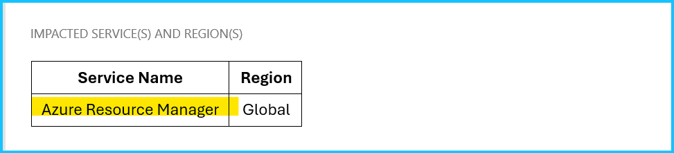
また、サービス正常性のイベントには Tracking-ID (追跡 ID) が付与されておりますので、Tracking-ID の情報もご記載ください。
Q. サービス正常性アラートで通知されたメールを、メールの件名でフォルダ分けしたいです。件名のルールを教えてください。
サービス正常性アラートのメールの件名や本文の内容は、特に決められた形式はございません。
メールの件名や通知内容は各サービスの弊社開発エンジニアが決定しております。ご参考までに過去に通知されたサービス正常性アラートの件名やメールで通知された内容を紹介しますが、決められた形式はないこと、ご了承ください。
| イベントの種類 | イベントの内容 | 過去に通知されたメール件名の例 | 過去に通知されたメールの内容 |
|---|---|---|---|
| サービスに関する問題 | サービスの問題は、Azure サービスに影響する問題が発生した際のイベント | Azure Resource Manager - Investigating | Azure Resource Managerプラットフォームに依存するサービスのリソース作成で問題が発生する可能性があることを通知した内容です。 |
| 計画メンテナンス | 定期的なメンテナンスは、Azure サービスの可用性に影響を及ぼす可能性のあるメンテナンスが発生した際のイベント | Advance Notification for Scheduled Maintenance to Azure Database for MySQL | Azure Database for MySQLの定期メンテナンスの事前通知のメールです。 |
| 正常性の勧告 | ユーザーが注目すべき Azure サービスの変更が発生した際のイベント | Action recommended: Allow communication with new Azure SQL Database gateways by 1 September 2020 | SQL Databaseの更新に伴い、推奨される操作をご案内した内容です。 |
| セキュリティ アドバイザリ | Azure サービスの可用性に影響する可能性があるセキュリティ関連の通知または違反があった際のイベント | Security - Critical: Certificate Authority revocation due to non-compliance of your certificates potentially impacting | 一部の証明書の失効に伴う影響について通知をするメールです。 |
Q. サービス正常性アラートで、現在利用しているサービスに関する通知のみを受け取りたいです。
サービス正常性アラート設定時の “サービス” や “リージョン” ですべて選択いただくことをご検討ください。
サービス正常性アラートは、ご利用いただいているサービスのご利用いただいているリージョンを対象としたイベントが発生した場合にのみ通知が行われる仕組みです。このため、サブスクリプション上のすべてのサービス、リージョンおよびイベントの種類を選択した場合にも、利用していないリソースに対してアラートは発生いたしません。サービス正常性アラートのサポート ブログ もあわせてご確認ください。
Q. Azure サービスの廃止に関する通知を受け取り、通知の内容に沿って移行作業を実施しましたが、同様の通知が再度通知されました。対応が完了していないリソースが存在するということでしょうか。
サービスの廃止や仕様の変更等、ご利用いただいているお客様に影響が大きいと推測される通知は、対象となるリソースが存在しない場合も、そのサービスをご利用いただいている幅広いお客様に通知させていただくことがございます。予めご了承ください。
Q. サービス正常性アラートやリソース正常性アラートを利用し、アクション グループでメール通知を設定しています。利用料金を教えてください。
メールの通知に関する費用のみが発生します。
アラート ルールで通知する場合、基本的にアラート ルールに対する料金と通知の料金が発生します。アクティビティ ログ アラート (サービス正常性やリソース正常性アラートを含む) の場合は、アラート ルールに対する料金は発生しません。
価格の詳細は Azure Monitor 価格サイトや計算ツールをご覧ください。
Note
リソース正常性アラートについては別途ブログを作成しております。
アクション グループ、アラート処理ルール
Q. アクション グループの処理が失敗したことを検知する方法はありますか。
誠に恐れ入りますが、基本的にアクション グループの失敗を検知する方法はございません。
アクション グループによる通知処理が失敗する原因は、主に以下の 2 つが考えらえます。
- Azure 側の障害でアクション グループがトリガーされなかった
- アクション グループはトリガーされたが、何かしらの原因で処理が失敗した
前者の場合は Azure のサービス正常性アラートで通知される可能性はございます。
一方で、後者の場合はお客様環境で確認いただく方法がなく、現時点でアクション グループの失敗を検知することができません。
アクション グループによって通知処理が失敗した原因の調査をご希望の場合は、以下の情報をもってお問い合わせをご起票くださいますようお願いいたします。
・アラート ルールのリソース ID
・アクション グループのリソース ID
・アラートが発報した日時 (タイムゾーンを明記してご記載ください。例. 2023-03-15 12:00 JST)
・アラート ID
Q. アラートが発報しましたが、メールが届いていません。考えられる原因を教えてください。
考えられる主な原因は以下の通りです。
こちらの公開情報にもトラブルシューティングのステップが掲載されておりますのでご確認ください。
- 通知されたメール アドレスが許可されていない
- アラート処理ルールによってメールの通知が抑制された
- アクション グループで登録解除されていた
- メールのレート制限に達した
Azure Monitor から送られるメールは以下のアドレスが利用されます。メール アドレスがブロックされていないかどうかをご確認ください。
・azure-noreply@microsoft.com
・azureemail-noreply@microsoft.com
・alerts-noreply@mail.windowsazure.com
アラート処理ルールによってメールの通知が抑制された可能性もございます。
Azure ポータルの [監視] - [アラート] から、アラート処理ルールでアラートの通知が抑制されていないかどうかをご確認ください。
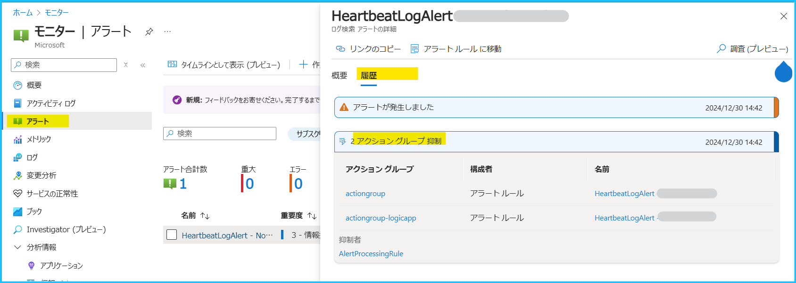
アクション グループのメール アドレスが登録解除されている可能性もございます。
Azure ポータルからアクション グループの編集画面を開き、[通知] の [状態] で 登録解除済み と表示されている場合は、こちら のブログを参考にメール アドレスの再登録をお願いいたします。
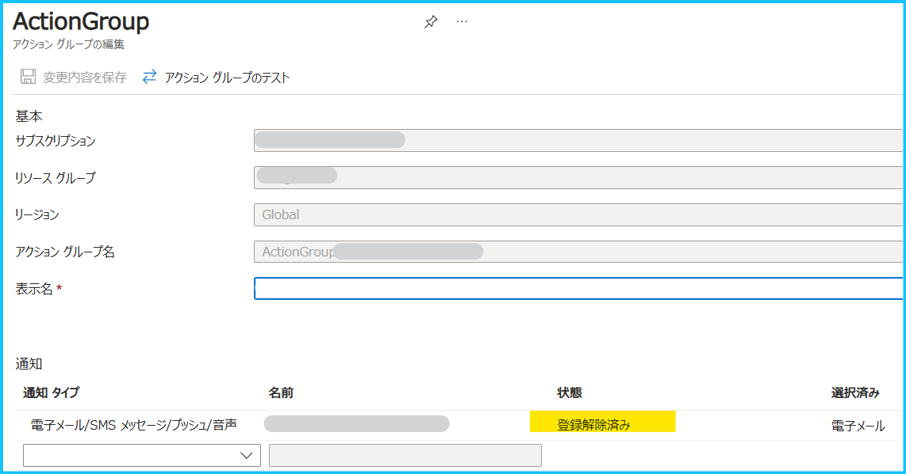
また、アクション グループには制限がございます。メールの場合は 1 時間に 100 通のレート制限があり、この制限に触れた場合は通知が停止されます。この制限に抵触すると、当該のアドレスに「We’ve temporarily paused your Azure email notifications」という通知メールが届きますので、このレート制限の影響でメールが届いていないとご判断いただけます。
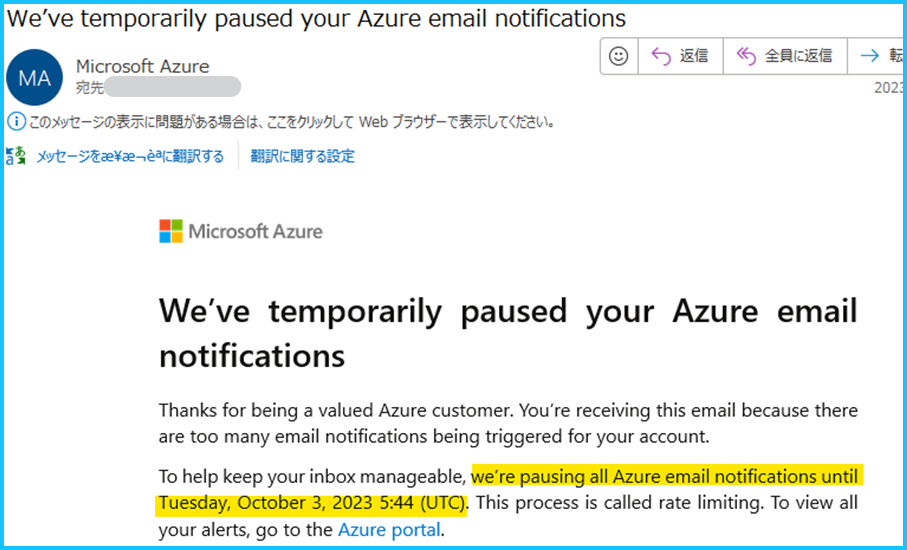
上記に該当しない場合は、Azure Monitoring サポートまでお問い合わせをご起票ください。
お問い合わせをご起票いただく際には、以下の情報をご連携くださいますようお願いいたします。
・アラート ルールのリソース ID
・アクション グループのリソース ID
・アラートが発報した日時 (タイムゾーンを明記してご記載ください。例. 2023-03-15 12:00 JST)
・アラート ID
Q. アクション グループでメールを通知しています。利用料金を教えてください。
サブスクリプション毎に 1,000 通までは無料でご利用いただけますが、この無料枠を超えた場合はご利用料金が発生します。
100,000 通につき $2 の場合、1,001 通目から 100,000 通目までは、$2 となります。
100,001 通 から 200,000 通目までは、さらに + $2 となり、＄4 となります。
現時点の価格の詳細は Azure Monitor 価格サイトや計算ツールをご覧ください。通知の種類 (メール、webhook、SMS など) によってご利用料金が異なりますので、アクション グループの設定内容に応じてご確認ください。
Q. アラート処理ルールのスコープでは、通知を抑制したいアラート ルールを指定すればよいのでしょうか。
いいえ。アラート処理ルールのスコープでは、影響を受けるリソースを指定してください。
影響を受けるリソース は、Azure ポータルの [監視] > [アラート] でご確認いただけます。
必ずしも、アラート ルールのスコープと 影響を受けるリソース が一致するとは限りませんので、ご注意ください。
また、スコープでサブスクリプションやリソース グループを選択することも可能ですが、サブスクリプションやリソース グループに存在するリソースを対象とした、すべてのアラート ルールにアラート処理ルールが適用されますので、ご注意ください。
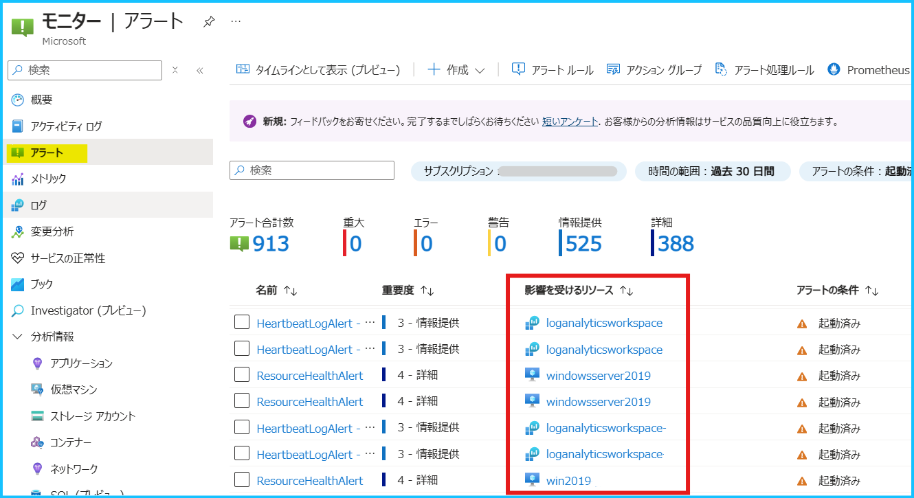
Q. アラート処理ルールを利用していますが、Azure ポータルの [監視] > [アラート] でアラートが発報しているようです。
アラート処理ルールは、アクション グループの適用/抑制を行う機能であり、アラート ルールの実行自体を抑制するものではございません。 アラートの発報や解決自体を抑制する機能ではございませんので、ご留意ください。
Q. アラート処理ルールによってアラート ルールの通知が抑制されたことを確認する方法を教えてください。
Azure ポータルの [監視] - [アラート] を開き、[履歴] を選択してください。
アラート処理ルールでアラートの通知が抑制された場合は、以下のように表示されます。
Q. アラート処理ルールのスコープは「サブスクリプション」や「リソース グループ」の単位で登録した方がよいですか。
弊社としては推奨している単位はございません。
監視対象となるリソース、リソース グループ、サブスクリプションのいずれか、お客様のご要件に沿うものをご指定ください。
アラート処理ルールのスコープでサブスクリプションやリソース グループを選択した場合、その配下に存在するリソースを対象とした、すべてのアラート ルールにアラート処理ルールが適用されます。特定のアラート ルールにアラート処理ルールを適用されたい場合には、フィルターの条件で [アラート ルール ID] もしくは [アラート ルール名] で通知を抑制したいアラート ルールをご指定ください。
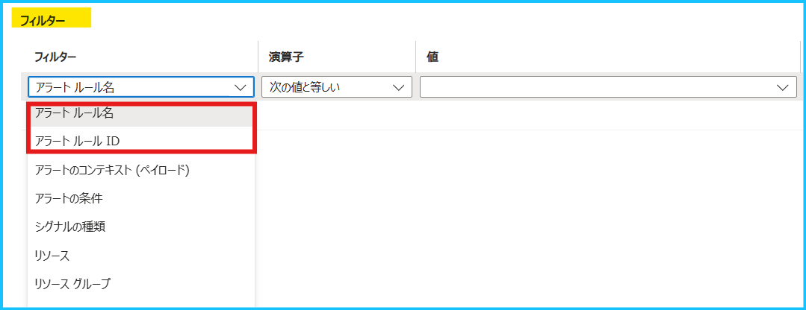
Q. ステートフルなアラート ルールを設定しています。アラートが「解決」したときのみ通知を抑制することはできますか。
はい、可能です。
アラート処理ルールでは、任意の時間帯にアクション グループを適用したり、抑制したりすることができます。
下図のようにアラートの条件に対して「解決済み」をご指定いただくことで、解決済みのアラートに対してアクション グループを抑制することが可能です。
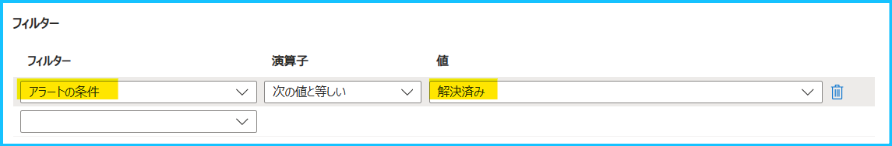
Q. アラート処理ルールでサービス正常性アラートの通知を抑制することはできますか。
いいえ。
サービス正常性アラートはアラート処理ルールで通知を抑制することはできません。
上記の内容以外でご不明な点や疑問点などございましたら、弊社サポート サービスまでお問い合わせください。
最後までお読みいただきありがとうございました！
※本情報の内容（添付文書、リンク先などを含む）は、作成日時点でのものであり、予告なく変更される場合があります。